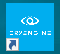
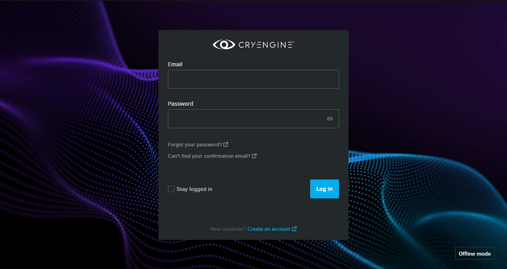
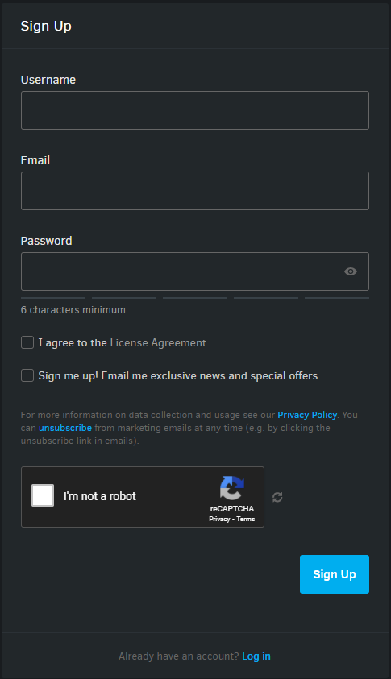
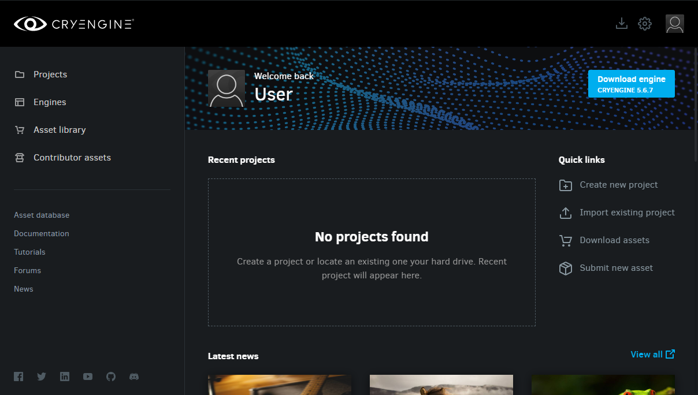
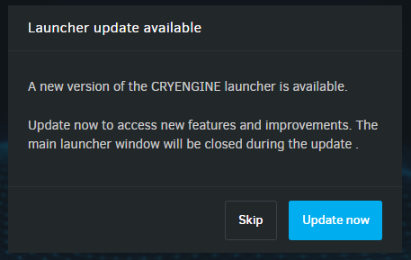
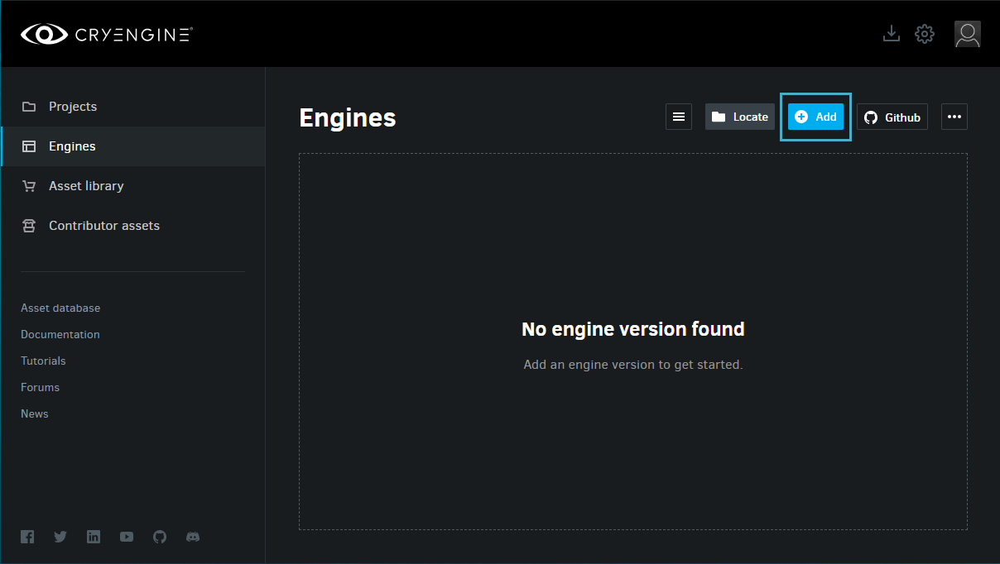
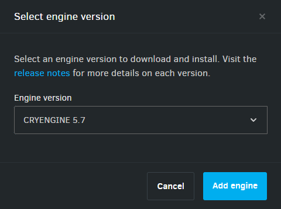
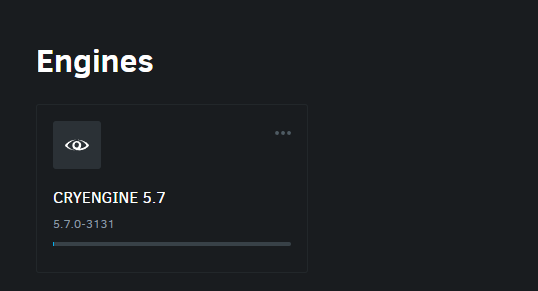
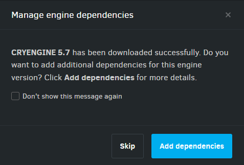
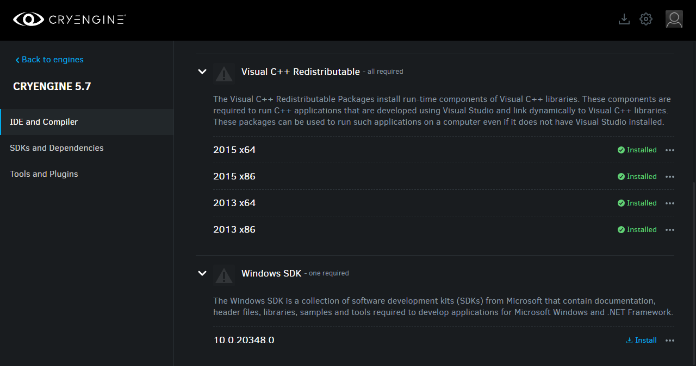

Начните с установки программы запуска CRYENGINE следующим образом:
Установка лаунчера
- На сайт CRYENGINE сайт, нажмите кнопку
кнопку, чтобы загрузить установщик программы запуска. - Просто следуйте инструкциям на экране, чтобы завершить процесс установки.

Создание учетной записи CRYENGINE
Откройте панель запуска, double нажав на значок

Экран входа в лаунчер
Использование Лаунчера в автономном режиме, нажав кнопку
Если у вас уже есть учетная запись, введите свои данные в соответствующие поля и нажмите кнопку Войти.
Если у вас нет учетной записи:
- Нажмите кнопку Создать учетную запись гиперссылка в нижней части окна входа в систему, которая будет перенаправлена на страница регистрации аккаунта.
На странице регистрации введите свои данные пользователя и нажмите кнопку Зарегистрируйтесь. Затем вы получите электронное письмо с подтверждением и ссылкой для подтверждения, по которой вам нужно будет нажать, чтобы активировать свою учетную запись..

Детали регистрации
Пожалуйста, обязательно прочтите и согласитесь с Лицензионное соглашение и Политика конфиденциальности.
Установка CRYENGINE
После входа в панель запуска под своей учетной записью CRYENGINE вы должны увидеть следующую панель мониторинга:

Если доступна новая версия программы запуска, при входе в систему вы должны увидеть следующее всплывающее окно:

Всплывающее окно обновления лаунчера
Откройте библиотеку Engines, нажав кнопку Двигатели на левой панели панели запуска, а затем нажмите кнопку Добавить кнопку в правом верхнем углу библиотеки, как показано ниже.

Библиотека двигателей
Откроется окно наложения «Выбор версии двигателя». Из Версия двигателя в раскрывающемся списке выберите версию CRYENGINE, которую вы хотите загрузить, и нажмите кнопку Добавить двигатель кнопка.

Добавить двигательВыбранная версия Engine будет добавлена в вашу библиотеку Engines.

Прогресс загрузкиПосле завершения загрузки вы должны увидеть Управление зависимостями движка приглашение, которое дает вам возможность установить различные компоненты, необходимые для работы с игровым кодом, сторонним промежуточным программным обеспечением, плагинами и т. д.

Управление зависимостями движкаЕсли вы не собираетесь работать с этими компонентами, просто нажмите кнопку Пропустить кнопку, чтобы завершить процесс установки Engine.
Если вы решили пропустить это приглашение, вы можете вернуться к параметрам зависимостей, используя кнопку Управление зависимостями опция в библиотеке Engines.Если вы нажмете Добавить зависимости однако вы увидите следующую панель мониторинга с IDE и компилятор, SDK и Зависимости и инструменты и Плагины вкладки:

Добавить зависимости
Изучите каждую из вкладок, чтобы увидеть все доступные компоненты и установить те, которые вам нужны.
После этого перейдите к Создание, импорт и обновление проектов чтобы узнать, как создать проект в установленной вами версии Engine.